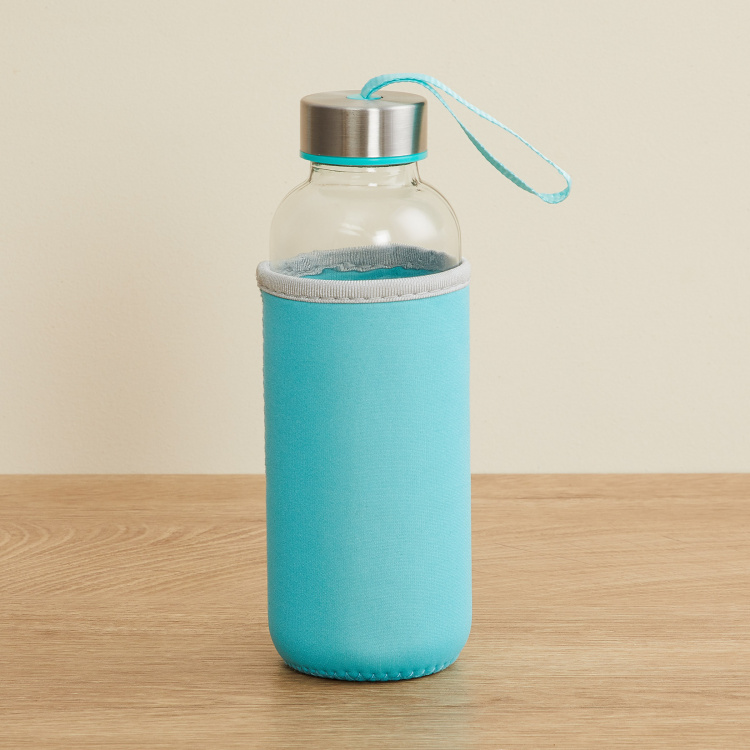
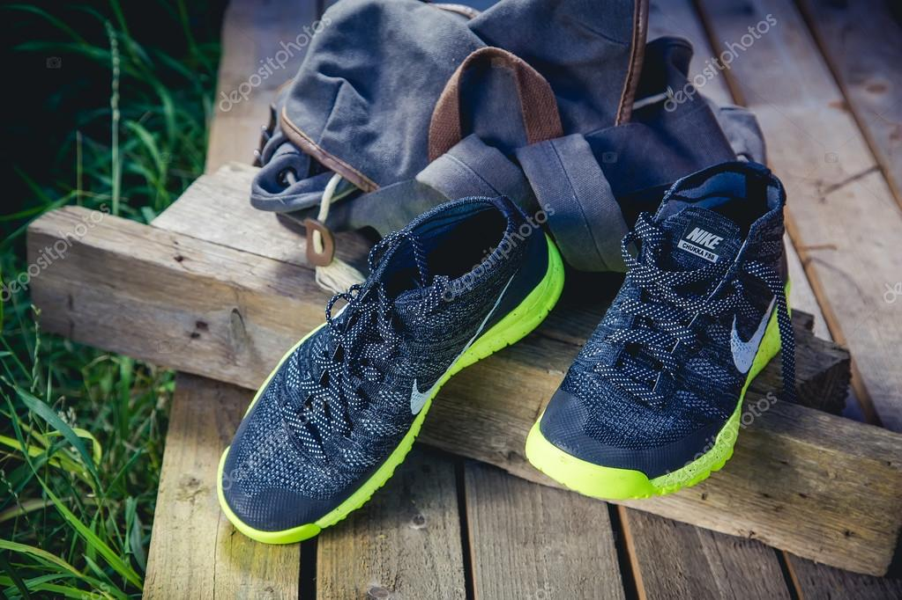
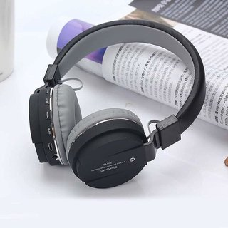

Test Image - 
Output on Microsoft Azure - Shampoo bottle
Output on Mobilenet Model - Water bottle
Result - Mobilenet Model is more accurate then Microsoft Azure.
Test Image - 
Output on Microsoft Azure - Sports shoes
Output on Mobilenet Model - Boots
Result - Microsoft Azure is more accurate then Mobilenet Model.
Test Image - 
Output on Microsoft Azure - Rop
Output on Mobilenet Model - Headphone
Result - Mobilenet Model is more accurate then Microsoft Azure.
Test Image -
Output on Microsoft Azure - Bear
Output on Mobilenet Model - Teddy bear
Result - Mobilenet Model is more accurate then Microsoft Azure.
Test Image - 
Output on Microsoft Azure - Bed
Output on Mobilenet Model - Sofa
Result - Microsoft Azure is more accurate then Mobilenet Model.